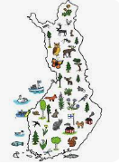

Sivuston esittely:
Tervetuloa lukemaan artikkeleita ja vinkkejä luonnossa liikkumiseen!
Luonto on mahtava paikka
rentoutua, nauttia kauniista maisemista ja kokea seikkailuja. Retkeily tarjoaa mahdollisuuden tutustua
uusiin paikkoihin ja saada unohtumattomia kokemuksia.
Sivustomme tavoitteena on tarjota sinulle hyödyllisiä vinkkejä luonnossa liikkumiseen ja retkeilyyn.
Meillä on asiantuntevia kirjoittajia, jotka jakavat kokemuksiaan ja tietojaan retkeilyvarusteista,
vaellusreiteistä, tulentekotaidoista ja muista luonnossa tarvittavista taidoista.
Haluamme auttaa sinua suunnittelemaan seuraavan retkesi mahdollisimman helposti ja mukavasti.
Olipa
suunnitelmissasi päiväretki lähimetsään tai pidempi vaellus erämaassa, löydät meiltä varmasti
hyödyllistä tietoa.
Tervetuloa tutustumaan sivustoomme ja inspiroitumaan luonnossa liikkumisesta!
Hae luontopolkua:
Retkeilykohteet:
Täältä löydät tietoa eri alueiden retkeilykohteista sekä käyttäjien kokemuksia ja arvosteluja:
1.Nuuksio kansallispuisto (Espoo):
Nuuksion kansallispuisto on yksi Suomen suosituimmista retkeilykohteista, joka tarjoaa upeita luontopolkuja, järviä ja metsiä.
Kansallispuiston alueella on yhteensä 30 eri luontopolkua, joiden pituudet vaihtelevat 1-18 kilometrin välillä.
Käyttäjien kokemuksia ja arvosteluja Nuuksiosta löytyy esimerkiksi Retkipaikka-sivustolta.
2.Koli kansallispuisto (Lieksa):
Koli kansallispuisto on yksi Suomen kansallismaisemista ja tarjoaa upeat näkymät Pieliselle sekä ympäröiville vaaroille.
Kansallispuistossa on useita eri retkeilyreittejä, joista suosituimpia ovat Ukko-Kolin nousu, Akka-Kolin kierros sekä Herajärven kierros.
Käyttäjien kokemuksia ja arvosteluja Kolista löytyy esimerkiksi Retkipaikka-sivustolta.
3.Helvetinjärven kansallispuisto (Ruovesi):
Helvetinjärven kansallispuisto sijaitsee Pirkanmaalla ja tarjoaa upeita rotkoja, kallioita ja järviä.
Kansallispuistossa on useita eri reittejä, joista suosituin on noin 4 kilometrin mittainen Helvetinkolun kierros.
Käyttäjien kokemuksia ja arvosteluja Helvetinjärvestä löytyy esimerkiksi Retkipaikka-sivustolta.
4.Repoveden kansallispuisto (Kouvola):
Repoveden kansallispuisto on yksi Suomen kauneimmista kansallispuistoista, joka tarjoaa upeita järvimaisemia, kallioita ja rotkoja.
Kansallispuistossa on useita eri retkeilyreittejä, joista suosituimpia ovat Olhavanvuoren kierros, Katajavuoren kierros sekä Lapinsalmen kierros.
Käyttäjien kokemuksia ja arvosteluja Repovedestä löytyy esimerkiksi Retkipaikka-sivustolta.
5.Oulangan kansallispuisto (Kuusamo):
Oulangan kansallispuisto sijaitsee Koillismaalla ja tarjoaa upeita koskia, rotkoja ja järviä.
Kansallispuistossa on useita eri retkeilyreittejä, joista suosituimpia ovat Karhunkierros, Pieni Karhunkierros sekä Kiutakönkään kierros.
Käyttäjien kokemuksia ja arvosteluja Oulangasta löytyy esimerkiksi Retkipaikka-sivustolta.
Käyttäjäkokemuksia:
Nuuksio kansallispuisto (Espoo):"Kävin viikonloppureissulla Nuuksion kansallispuistossa Espoossa.
Olin aivan hämmästynyt siitä, kuinka lähellä kaupunkia voi olla näin upeaa luontoa.
Vaikka en ole mikään eräjorma, löysin helposti hyviä reittejä patikointiin ja maisemien ihailuun. Erityisesti Pirttimäen näkötorni oli upea, sieltä näkyi koko kansallispuisto!"
Koli kansallispuisto (Lieksa):
"Vierailemme perheen kanssa usein Kolilla.
Lapset ovat aivan innoissaan kiipeillessään Ukko-Kolin huipulle ja ihailessaan maisemia sieltä.
Vaikka Koli onkin aika suosittu turistikohde, on siellä silti helppo löytää rauhallisia paikkoja patikointiin ja piknikeille.
Suosittelen ehdottomasti yöpymistä joko kansallispuiston luontokeskuksessa tai jossain alueen tunnelmallisista mökeistä."
Helvetinjärven kansallispuisto (Ruovesi):
"Kävimme ystäväni kanssa retkellä Helvetinjärven kansallispuistossa.
Vaikka alue onkin pieni, se tarjoaa upeita maisemia ja monipuolisia reittejä patikointiin.
Erityisesti rotkolaakso oli vaikuttava näky.
Myös järven rannalla oli hyvä paikka levähtää ja nauttia eväistä.
Suosittelen Helvetinjärven kansallispuistoa kaikille luonnosta ja patikoinnista kiinnostuneille!"
Repoveden kansallispuisto (Kouvola):
"Olen käynyt Repoveden kansallispuistossa jo useamman kerran ja joka kerta se yllättää upeilla maisemillaan.
Erityisesti Olhavanvuoren kiipeilyreitti ja Lapinsalmen silta ovat suosikkipaikkojani.
Alueella on myös hyvät mahdollisuudet telttailuun ja retkeilyyn, ja maisemat ovat kaiken kaikkiaan vaikuttavat.
Suosittelen Repoveden kansallispuistoa kaikille luonnossa liikkumisesta nauttiville!"
Oulangan kansallispuisto (Kuusamo):
"Oulangan kansallispuisto on oikea luonnon helmi.
Vierailemme siellä usein koko perheen kanssa ja joka kerta löydämme jotain uutta nähtävää.
Oulankajoki ja sen ympäristö ovat vaikuttavia ja alueella on upeita rotkoja ja putouksia.
Patikointireitit ovat monipuolisia ja niitä löytyy eri vaativuustasoilla."
Klikkaa alla olevaa kuvaketta (avaa kartan suurempana):
Varuste- sekä tarvikevinkit:
Täältä löydät tietoa erilaisista retkeilyvarusteistasekä vinkkejä varusteiden valintaan ja käyttöön.
Muista ainakin nämä 8 asiaa:
1. Suunnittele reitti etukäteen: Ennen kuin lähdet luontopolulle, tutki reitti ja sen vaativuus.
Tämä auttaa sinua valitsemaan oikeat varusteet ja valmistautumaan sopivasti.
2. Valitse oikeat kengät: Valitse kengät, jotka sopivat reitin maastoon. Kävelykengät ovat hyvä
valinta helppokulkuisille reiteille, kun taas vaelluskengät ovat parempi valinta vaikeakulkuisille
reiteille.
3. Pukeudu sään mukaan: Pukeudu kerroksittain, jotta voit tarvittaessa säätää vaatetustasi. Huomioi
myös sään vaihtelut ja varaudu esimerkiksi sadevarusteilla.
4. Ota mukaan tarpeeksi vettä ja evästä: Muista juoda tarpeeksi vettä, jotta pysyt nesteytettynä.
Ota myös mukaan riittävästi evästä, jotta jaksat kulkea reitin loppuun asti.
5. Käytä retkikarttaa tai navigaattoria: Retkikartta tai navigaattori auttaa sinua pysymään reitillä
ja varmistamaan, että et eksy.
6. Käytä aurinkosuojavoidetta ja hyttyskarkotetta: Jos olet alttiina auringolle tai hyttysille,
muista käyttää aurinkosuojavoidetta ja hyttyskarkotetta.
7. Tarkista varusteet ennen lähtöä: Tarkista ennen lähtöä, että kaikki varusteet ovat kunnossa ja
toimivat. Muista myös ladata esimerkiksi puhelimesi akku ja ottaa vara-akku mukaan.
8. Noudata jokamiehenoikeuksia: Noudata jokamiehenoikeuksia ja pidä huoli luonnosta. Älä jätä roskia
maastoon ja noudata reittien merkintöjä.
Alapuolella vielä linkki videoon, jossa opastetaan rinkan pakkaaminen:
Toivottavasti näistä vinkeistä oli apua!
Uusimmat artikkelit ja retkivinkit:
Tässä muutama vinkki tuleville retkillesi:
1. Valmistaudu huolella: tutustu retkikohteeseen etukäteen ja varaa tarvittavat varusteet ajoissa.
2. Ota mukaan tarpeeksi vettä ja eväitä, etenkin pidemmille retkille.
3. Älä jätä roskia luontoon vaan kerää ne mukaasi ja hävitä asianmukaisesti.
4. Huomioi myös muut retkeilijät ja eläimet: kulje merkityillä reiteillä, älä häiritse eläimiä ja anna tilaa muille retkeilijöille.
5. Jos olet epävarma retkeilytaidoistasi, osallistu ensin jonkin järjestetyn retken tai kurssin.
Tietoa sivustosta:
Täältä löydät tietoa sivustosta, sen ylläpidosta ja yhteystiedot sekä usein kysytyt kysymykset.
Luonto ja retkeilyvinkit sivusto on huomoristisessä mielessä toteuttu sivusto.
Sivuston
sisältö
on kuvitteellista ja sivuston on tarkoitus vain myötäillä ideaa, että mieltä luonto- ja
retkeilyvinkit
nettisivu voisi näyttää.
Tämä sivusto on opiskelijan tuottama työ osana Karelian mobiliili- ja tietokoneliittymät kurssia
on
on yksi kurssin keskeisimmistä suoritettavista töistä.
Yhteystiedot (yhdyshenkilö):
Oskari KärkkäinenNaantalinkatu 13 A4
70145 Kuusamo
s-posti: luontopolut(at)gmail.com
puh: 044 0645 005
Usein kysytyt kysymykset:
Mikä luontopolku on hyvä aloittelevalle retkeilijälle?
Mitä ottaa mukaan?
Ovatko luontopolut avoimia kaikille?
Ovatko reitit ympärivuotisessa käytössä?